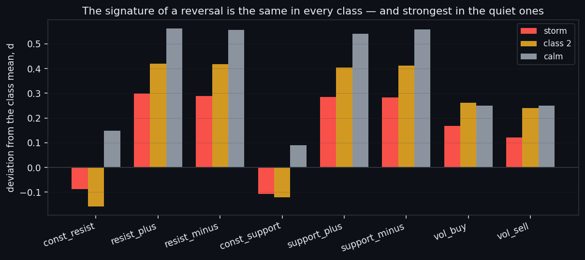
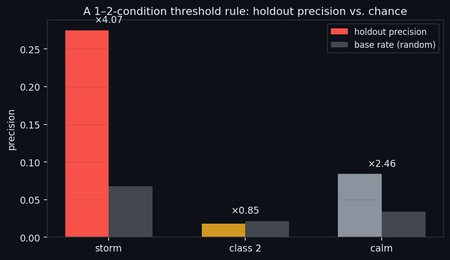
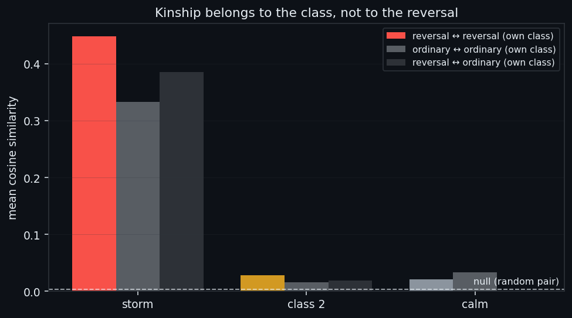
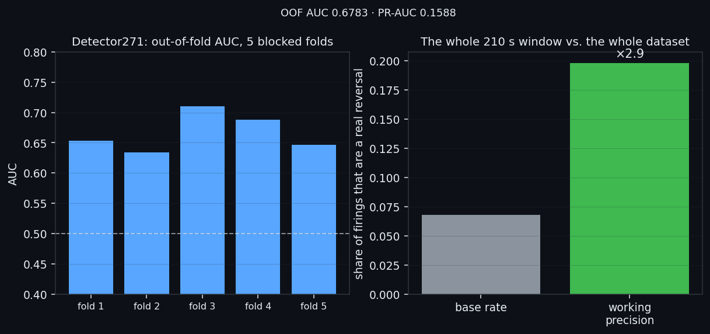
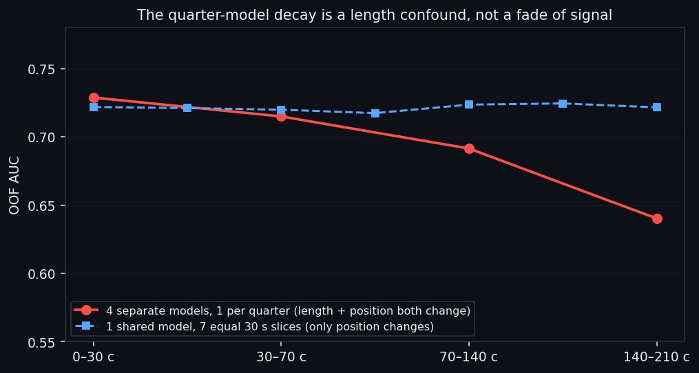
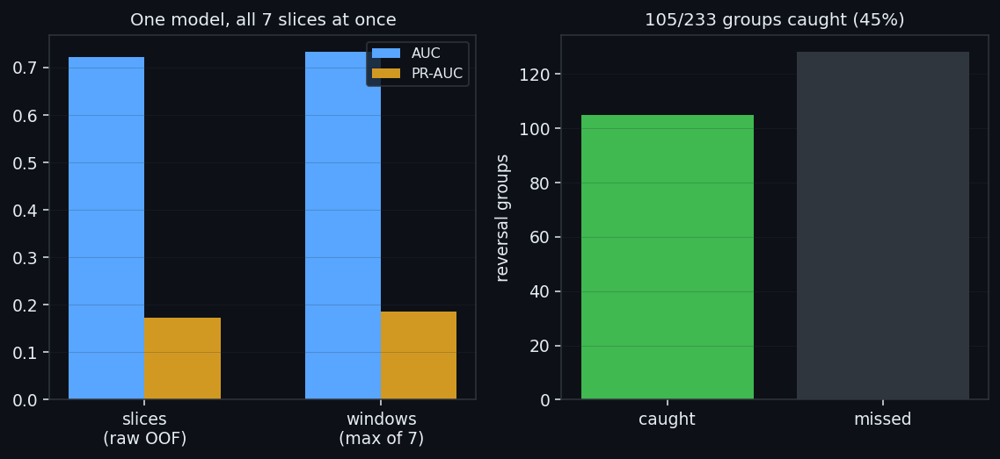
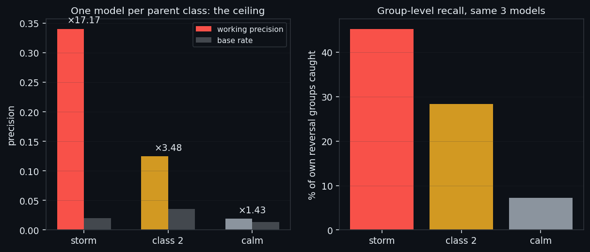
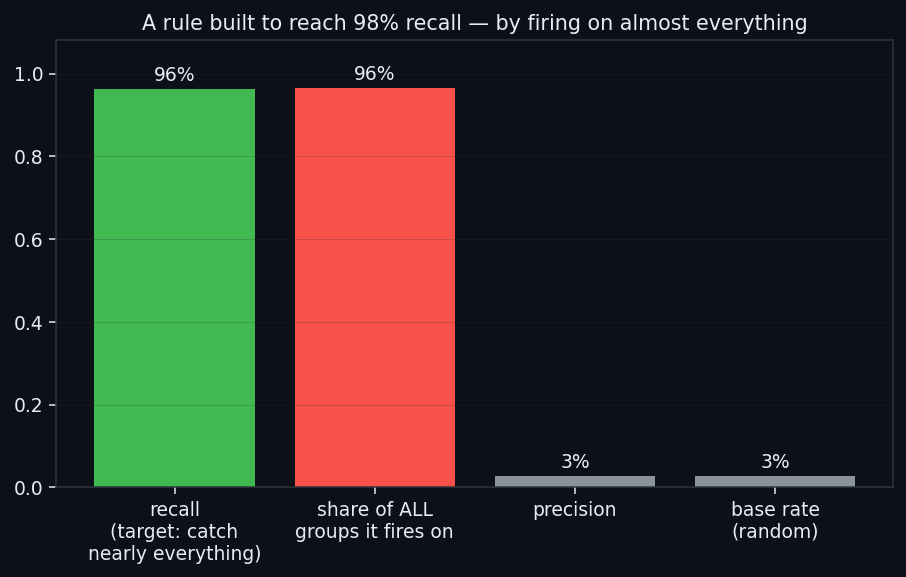

We Went Looking for the DNA of a Reversal. We Found a Ceiling Instead.
An earlier study on this dataset (175 days of BTC) found 271 order-book events that sit exactly on the turning points of price, and showed that a model cannot separate them from the thousands of ordinary events of their own class. This study asks a narrower question: forget separating a reversal from its class — is there anything, on its own, that a reversal event's 271 examples share? Nine different methods attack the question from nine angles: a two-condition threshold rule, a raw-vector kinship check, a full neural detector, a scan for the shortest useful slice of the window, four models on four quarters of it, one model on all of its 30-second slices at once, and three independent models — one per parent market state. Every method finds something real, reproducible, and well above every null control we built. None of them clears the bar a trading signal needs. The best operating point we found, buried inside the loudest of four market states, is right roughly one time in three.
Full walkthrough — streamed from YouTube.
① What we are looking for, and why it is a different question
The predecessor study, We Found the Reversal Signal. Machine Learning Could Not Tell It Apart, took four detectors trained on this dataset — storm, class 2, calm and PCA-quiet, from an earlier study — and found 271 groups of their firings that sit on a turning point of price (ZigZag 2.3%, ±15 minutes). It then asked models to separate those 271 events from the rest of their own class, and failed: at the window level, nothing beat a null control.
This study drops the "of their own class" clause. The question becomes simpler and cheaper to ask: do the 271 reversal events, taken together, look like anything at all — a compact rule, a kinship with each other, a signature a network can find against the whole dataset rather than only against their own class's other firings? Nine methods answer this from nine directions, in order of increasing model capacity: a two-condition threshold rule · a raw-vector similarity check · a full neural detector on the whole 210-second window · a scan for whether a shorter slice of the window is enough · four separate models on four quarters of it · one model trained on all of its 30-second slices at once · and, last, three independent models, one per parent market state.
Every method is graded against the same discipline this project uses everywhere models train on time series: a chronological, group-blocked split with an embargo, so that no window near a reversal a model has already seen leaks into its own test fold. All numbers below are out-of-fold.

② The cheapest hypothesis first: a two-condition rule
Before training anything, we asked the simplest possible question in the style this project uses for its live rules elsewhere on the dashboard: is there a 1–2-condition AND rule on 11 group-level numbers (8 average feature levels, group size, duration, sharpness) that separates a class's reversal groups from the rest of its own firings? Top features by |AUC−0.5|, a grid of thresholds, F1 maximised on the first 70% of groups by time, checked on the last 30%.
| class | rule | holdout precision / recall | base rate | lift | |---|---|---|---|---| | storm | `dur_min ≥ 35` | 0.275 / 0.44 | 0.0676 | ×4.07 | | class 2 | `vol_buy ≥ 0.928 AND support_plus ≥ 3.49` | 0.018 / 0.091 | 0.0217 | ×0.85 | | calm | `support_minus ≥ 3.86` | 0.084 / 0.545 | 0.0341 | ×2.46 |
Class 2's rule looks reasonable on the 71 groups it was fit to and then scores below its own base rate out of sample — lift 0.85, worse than a coin flip. Storm's rule, the best of the three, holds up better (×4.07) but still means three out of every four times it fires, it is wrong. We are not showing this as a failed idea to discard — this result, applied to every group in the dataset, is the honest floor the rest of the study measures itself against.

③ Are the 271 events even related to each other?
A cheaper check than training anything: are the 3734 windows that make up the 271 events more similar to each other than to a random window? Every window becomes a 1680-number vector, standardised against the population and scaled to unit length — so cosine similarity reads shape, not raw amplitude, and a loud window and a quiet window with the same internal proportions score as similar.
| class | event ↔ event (own class) | rest-of-class ↔ rest-of-class | event ↔ rest of own class | |---|---|---|---| | storm | 0.4488 | 0.3334 | 0.3857 | | class 2 | 0.0286 | 0.0162 | 0.0193 | | calm | 0.0208 | 0.0338 | 0.0006 |
(Null: two independent random samples of the rest of the dataset score 0.003.)
Storm's reversal events do sit well above the null (0.4488 vs 0.003) — but storm's ordinary, non-reversal firings are almost exactly as similar to each other (0.3334), and a reversal event looks nearly as close to an ordinary storm event (0.3857) as to another reversal. The kinship is real, but it belongs to the class, not to the reversal. In calm, there is not even that much: reversal events are less similar to each other (0.0208) than an arbitrary pair of ordinary calm windows (0.0338). Whatever a reversal event of calm is, it is not a recognisable family.

④ The full network, the whole window, against the whole dataset
Group-level rules were the cheapest hypothesis. Next is the most direct one: a dilated convolutional network — the architecture this project has used to win every comparable grid search since /class4 — trained on the raw 8×210 window to separate a reversal window from any other window in the dataset, five chronological blocks with an embargo, 233 connected reversal groups (a handful of the original 271 share a window across two detectors and get merged so the same event is not counted twice).
Out-of-fold: AUC 0.6783±0.0282, PR-AUC 0.1588±0.078 against a base rate of 6.8%. At the operating point where the model fires exactly as often as there are true reversal windows: precision = recall = 0.1979, a ×2.9 lift over chance. This already beats every threshold rule of section ② and every "rejected direction" further down this page — but five out of every six windows it flags are still not a reversal.

⑤ Where in the window does the signal live?
If a 1680-number window carries this little signal, maybe most of it is dead weight. A grid search over both length and position (231 cells: length 10–210 s in steps of 10, every offset) using fast logistic-regression screening finds a winner at **30 seconds, offset 0** — the first 30 seconds of the window — scoring AUC 0.698, matching the full 210-second window on the same linear model (AUC 0.6536) while carrying 7× fewer numbers. Position barely matters: AUC stays close to 0.698–0.7018 whether the 20–30-second slice is taken from the start or the end of the window. Confirmed with the full network on the same slice: AUC 0.7287, AP 0.1813 — better than the network on the full window (section ④).
Then we tried four separately-trained models, one per quarter of the window (0–30 · 30–70 · 70–140 · 140–210 seconds, boundaries set after this scan), and got a result that looked like it contradicted the scan above: a clean, monotonic decay from the first quarter to the last.
| quarter | seconds | OOF AUC | working precision | |---|---|---|---| | a | 0–30 с | 0.7287 | 0.2266 | | b | 30–70 с | 0.7149 | 0.2191 | | c | 70–140 с | 0.6914 | 0.2151 | | d | 140–210 с | 0.6402 | 0.1133 |
This is a confound, not a contradiction, and section ⑥ shows why. The four-quarter models differ in two things at once — length AND distance from the start — while the position scan above holds length fixed. When we later trained one model on all seven 30-second slices of the window as separate examples (section ⑥), AUC across position came back essentially flat: 0.7218 at the start, 0.7215 at the end. The apparent decay belongs to the last quarter's extra length and distance combined, not to a genuine fade of signal toward the end of the window.

⑥ One model, all seven slices, at once
Instead of four separate models, we cut every window into 7 non-overlapping 30-second slices and trained one model to recognise a "reversal slice" on all 7 positions together — 393,841 examples instead of 56,263. A label is inherited from the parent window (all 7 slices of a reversal window count as positive); the fold split and embargo are computed once at the window level and stretched down to slices, not recomputed on the finer grid — recomputing naively on the small unit would have quietly shrunk the real embargo buffer roughly sevenfold, from about 11.7 hours to 1.7.
| unit | AUC | AP | |---|---|---| | slices (raw OOF, 393,841 examples) | 0.7213 | 0.1735 | | windows (max of 7 slices, 54,724 windows) | 0.7321 | 0.1847 |
Aggregated to the window level, one shared model matches the specialised first-quarter model of section ⑤ (0.7287/0.1813) almost exactly — pooling every position into one dataset costs nothing. At the group level — did any of a reversal group's slices cross the threshold — 105 of 233 connected reversal groups are caught (45%). At the operating point matched to the positive count: precision = recall 0.219, ×3.21 lift.

⑦ Splitting by parent class: where the ceiling actually sits
Section ③ already hinted that "reversal" means something different in each parent class — storm has some family resemblance, calm has none. The last and most granular test trains three fully independent models (storm, class 2, calm; PCA-quiet has only 1 reversal event and is skipped), each asking "does this look like my own class's reversal" against a negative pool built from the entire dataset — other classes' windows included.
| class | reversal windows (groups) | AUC (slices) | working precision | lift | groups caught | |---|---|---|---|---|---| | storm | 1085 (95) | 0.9577 | 0.3404 | ×17.17 | 43/95 (45%) | | class 2 | 1961 (106) | 0.8177 | 0.1247 | ×3.48 | 30/106 (28%) | | calm | 739 (69) | 0.7215 | 0.0193 | ×1.43 | 5/69 (7%) |
This is the single best number the whole study produces: storm's ×17.17 lift, precision 0.3404. It is also, read plainly, one correct signal for every two wrong ones. Class 2 and calm are markedly worse — calm's lift of ×1.43 is barely distinguishable from noise, and its precision, 0.0193, sits right against its 1.4% base rate. Same recipe, same training budget, three classes — and the result spans a factor of six. The AUC numbers alone (0.72–0.96) would suggest something close to usable; it is the AP and the operating-point precision, appropriate for how rare a real reversal event actually is, that show the honest picture.

⑧ What we tried and put aside
Three more approaches were tried on the group-level representation of section ② before we moved to full-window networks, and all three are left in the code but not on the dashboard tab, because none improved on what is reported above.
A pooled classifier — one model deciding "is this any of the 271 canonical events" against the whole pool of 9,405 groups from all four detectors, with "which class fired" as a legitimate input feature — reaches PR-AUC 0.1542 [0.123, 0.195] against a null of 0.052. Real signal, three times the null, and still only one correct call in six or seven at any reasonable threshold.
A template match — the average z-scored profile of all 271 events used as a single direction, and every group scored by how well it projects onto it — reaches a respectable-looking holdout AUC of 0.793, but at the precision-maximising threshold catches only 14% of events at 18% precision.
And an OR-rule built specifically to reach 98% recall — 13 threshold conditions, each added to cover whatever positives the rule so far had missed — got there: 96.2% recall on the holdout set. It did this by firing on 2721 of 2822 groups (96%). Precision 0.0283 lands exactly on the base rate 0.0283: a lift of 1.0. A rule that technically "catches almost every reversal" the same way an open umbrella catches rain — by covering the whole sky. High recall, stated on its own, proves nothing; every number in this study is reported next to what it costs to get it.

⑨ What this is worth
Nine methods, one direction of travel. A group-level threshold rule barely clears random. A full network on the whole window reaches ×2.9 lift at 20% precision. Splitting the window by position changes nothing — the same signal is there whether you look at the first 30 seconds or the last. Splitting the dataset by parent class changes everything: storm's own detector reaches ×17.17 lift and 34% precision, the best number in the whole study — and calm's reaches essentially nothing.
There was a point, partway through this line, where it felt like a working, automated trading signal was close — a detector with a real, reproducible edge, several times better than chance, built on the same architecture that has won every comparable grid search on this dataset. It is not close. Every identification method we tried, across nine different framings of the same question, tops out at a precision too low to act on: even storm, the strongest case by a wide margin, is wrong roughly two times out of three. A rule tuned to be generous with recall is a rule that fires on nearly everything. A model with an excellent AUC still has an unusable AP once the base rate is as low as a genuine reversal's.
We are not closing this line. The pieces that survived every control — a real, above-null signal in group-level features, a reproducible network edge against the whole dataset, and a sharp asymmetry between market states that says storm's reversals carry a signature the others do not — are raw material, not a finished answer. What continues from here is a search for a better way to identify these events, not a claim that the underlying signal isn't there: on this evidence, it is.
If this changed how you read the tape, the natural next step is We Found the Reversal Signal. Machine Learning Could Not Tell It Apart. —
We Found the Reversal Signal. Machine Learning Could Not Tell It Apart.
Four Market States, Found Twice by Two Independent Pipelines
Volume Is the Fuel — Not the Steering Wheel
We recorded the Binance order book every second for six coins over five months and ran eighteen tests on what volume really does.
About Market Research Lab — What We Collect and Why
Most market commentary is storytelling.
Comments
Discussion is powered by GitHub. Enable it by adding secrets/giscus.json (repo IDs from giscus.app).